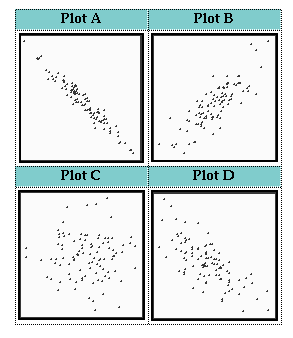

- Exercise 3.3 (1 Point):
There may be a ``gender gap'' in political party preference in the United States, with women more likely than men to prefer Democratic candidates. A political scientist selects a large sample of registered voters, both men and women. She asks every voter whether they voted for the Democratic or the Republican candidate in the last congressional election. Is this an observational study or an experiment? Why? What are the explanatory and response variables?
- Exercise 3.8 (1 Point):
The National Halothane Study was a major investigation of the safety of anesthetics used in surgery. Records of over 850,000 operations performed in 34 major hospitals showed the following death rates for four common anesthetics (L. E. Moses and F. Mosteller, ``Safety of anesthetics,'' in J. M. Tanur et al. (eds.), Statistics: A Guide to the Unknown, 3rd ed., Wadsworth, Belmont, Calif., 1989, pp. 15-24):There is a clear association between the anesthetic used and the death rate of patients. Anesthetic C appears dangerous.Anesthetic A B C D Death rate 1.7% 1.7% 3.4% 1.9%
(a) Explain why we call the National Halothane Study an observational study rather than an experiment, even though it compared the results of using different anesthetics in actual surgery.
(b) When the study looked at other variables that are confounded with a doctor's choice of anesthetic, it found that Anesthetic C was not causing extra deaths. Suggest several variables that are mixed up with what anesthetic a patient receives.
- For each of the experimental situations described in Exercises
3.9 to 3.12, identify the experimental units or subjects, the factors,
the treatments, and the response variables.
- Exercise 3.9 (1 Point):
Sickle cell disease is an inherited disorder of the red blood cells that in the United States affects mostly blacks. It can cause severe pain and many complications. Can the drug hydroxyurea reduce the severe pain caused by sickle cell disease? A study by the National Institutes of Health gave the drug to 150 sickle cell sufferers and a placebo to another 150. The researchers then counted the episodes of pain reported by each subject.
- Exercise 3.12 (1 Point):
New varieties of corn with altered amino acid patterns may have higher nutritive value than standard corn, which is low in the amino acid lysine. An experiment compares two new varieties, called opaque-2 and floury-2, with normal corn. Corn-soybean meal diets using each type of corn are prepared at three different protein levels: 12%, 16%, and 20%. There are thus nine diets in all. Researchers assign 10 one-day-old male chicks to each diet and record their weight gains after 21 days. The weight gain of the chicks is a measure of the nutritive value of their diet.
- Exercise 3.13 (1 Point):
Exercise 3.9 describes a medical study of a new treatment for sickle cell disease.
(a) Outline the design of this experiment.
(b) Use of a placebo is considered ethical if there is no effective standard treatment to give the control group. It might seem humane to give all the subjects hydroxyurea in the hope that it will help them. Explain clearly why this would not provide information about the effectiveness of the drug. (In fact, the experiment was stopped ahead of schedule because the hydroxyurea group had only half as many pain episodes as the control group. Ethical standards required stopping the experiment as soon as significant evidence became available.)
- Exercise 3.14 (1 Point):
Some medical researchers suspect that added calcium in the diet reduces blood pressure. You have available 40 men with high blood pressure who are willing to serve as subjects.
(a) Outline an appropriate design for the experiment, taking the placebo effect into account.
(b) The names of the subjects appear below. Do the randomization required by your design, and list the subjects to whom you will give the drug. (If you use Table B, enter the table at line 131.)Alomar Denman Han Liang Rosen Asihiro Durr Howard Maldonado Solomon Bennett Edwards Hruska Marsden Tompkins Bikalis Farouk Imrani Moore Townsend Chen Fratianna James O'Brian Tullock Clemente George Kaplan Ogle Underwood Cranston Green Krushchev Plochman Willis Curtis Guillen Lawless Rodriguez Zhang
- Exercise 3.15 (1 Point):
Will providing child care for employees make a company more attractive to women, even those who are unmarried? You are designing an experiment to answer this question. You prepare recruiting material for two fictitious companies, both in similar businesses in the same location. Company A's brochure does not mention child care. There are two versions of Company B's material, identical except that one describes the company's on-site child-care facility. Your subjects are 40 unmarried women who are college seniors seeking employment. Each subject will read recruiting material for both companies and choose the one she would prefer to work for. You will give each version of Company B's brochure to half the women. You suspect that a higher percentage of those who read the description that includes child care will choose Company B.
(a) Outline the design of the experiment. Be sure to identify the response variable.
(b) The names of the subjects appear below. Do the randomization required by your design and list the subjects who will read the version that mentions child care. (If you use Table B, begin at line 121.)Abrams Danielson Gutierrez Lippman Rosen Adamson Durr Howard Martinez Sugiwara Afifi Edwards Hwang McNeill Thompson Brown Fluharty Iselin Morse Travers Cansico Garcia Janle Ng Turing Chen Gerson Kaplan Quinones Ullmann Cortez Green Kim Rivera Williams Curzakis Gupta Lattimore Roberts Wong
- Exercise 3.20 (1 Point):
The following situations were not experiments. Can an experiment be done to answer the questions raised? If so, briefly outline its design. If not, explain why an experiment is not feasible.
(a) The ``gender gap'' issue of Exercise 3.3 (see above).
(b) The comparison of two surgical procedures for breast cancer in Exercise 3.5 (see below - there is no need to answer that question - just answer part (b) here).
Exercise 3.5: What is the preferred treatment for breast cancer that is detected in its early stages? The most common treatment was once mastectomy (removal of the breast). It is now usual to remove the tumor and nearby lymph nodes, followed by radiation. To study whether these treatments differ in their effectiveness, a medical team examines the records of 25 large hospitals and compares the survival times after surgery of all women who have had either treatment.
(a) What are the explanatory and response variables?
(b) Explain carefully why this study is not an experiment.
(c) Do you think this study will show whether a mastectomy causes longer average survival time? Explain your answer carefully.
A search engine such as http://www.excite.com/, http://www.lycos.com/, or http://www.yahoo.com/ might be helpful to answer these questions. On top of these pages you usually have a box where you can type in the keywords you are looking for. You can type in a single keyword, multiple keywords separated by a blanc, e.g., kw1 kw2 kw3 (in this case, the search engine will look for kw1 or kw2 or kw3), and multiple keywords with a leading +, e.g., +kw1 +kw2 +kw3 (in this case, the search engine will look for kw1 and kw2 and kw3). If you try "text" where text appears in double quotes and may be a longer sentence, you should find pages that contain these words in exactly the same order (but eventually with a few other words inbetween).
In addition to a search engine, or if you know that your data is likely to be distributed by a federal agency, use
http://www.fedstats.gov
as your starting point.
- a) Locate a Web site that lists earthquakes in Utah since 1990.
- b) Locate a Web site that deals with air pollution in Utah.
- c) Locate a Web site that provides us with information on
unemployment rates in Utah.
- d) Indicate your major (or your area of specialization) and
list at least 2 Web sites (i.e., their URLs)
that distribute statistical data
related to your major. These Web sites can contain data that
typically is collected in your major, the number of graduates
with this major that obtained a BS, MS, or PhD degree in 1999,
summaries of salaries of people with this major in different
US states or worldwide, or any other type of data related
to your major. In this part (e) of the question, you do not
have to indicate how you found the 2 Web sites. However,
you have to explain in 2 or 3 sentences which kind of statistical
data is available on each of the sites you listed.


The correct correlation coefficients for the data points displayed in these four scatterplots are 4 out of the following 6 values: -0.97, -0.72, -0.02, 0.50, 0.82, 0.97. For each plot, choose its correlation:
- What is the correlation coefficient for Plot A?
- What is the correlation coefficient for Plot B?
- What is the correlation coefficient for Plot C?
- What is the correlation coefficient for Plot D?